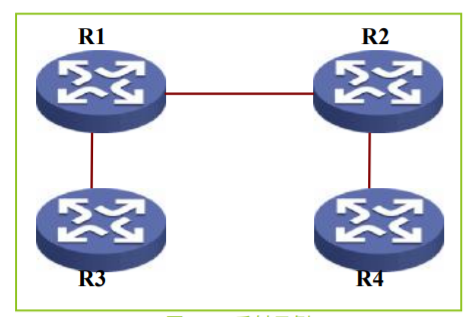

BGP Learning
本文主要介绍BGP相关的概念
1.BGP综述
BGP的出现
数据量少的时代
BGP的发展
- BGPv1定义了BGP最基础的一些协议特征，使用TCP作为传输层协议来保证BGP的可靠传 输。
- BGP是建立在两个不同的AS间，存在信任问题，所以BGP不能通过自动发现，而是需要手动配置邻居，使用指定地址建立TCP关系。与AS外部节点建立的BGP关系叫做EBGP关系，与AS内部节点建立的BGP关系是IBGP关系。
- BGP使用AS号来解决AS间的环路问题，如果收到某个路由信息携带了自己的AS号，说明是已知路由，出现了路由环路，就不再处理它。主要使用v2版本中确立的AS-path概念。
- 对于AS内部，为了防止出现路由环路则采用了路由水平分割，即从IBGP邻居学习到的路由不会传递给另一个IBGP邻居，这样就会要求AS内部的路由器要两两建立IBGP关系（即全连接）。
- 因为在大型网络中全连接是不可想象的，所以出现了路由反射器和BGP联盟两种技术。
- 路由反射器是在AS中指定一个节点作为反射器，所有其他节点都与反射器建立IBGP关系，反射器作为一个中间节点，在其他任何两个IBGP间传递路由。
- BGP联盟则是在AS内部做了重新规划，把一个扁平化的AS又划分为多个私有AS，一方面可以分层管理庞大的AS，又可以通过层次的划分，减少全连接的需求。
- BGP报文采用TLV的结构，这种结构是非常利于扩展和向下兼容的。
- 从BGPv2开始，消息种类确定为4种。在TCP连接建立后
种类 作用 OPEN 触发BGP关系建立过程 UPDATE 进行路由的发布和撤销 NOTIFICATION 通告出现错误 KEEPALIVE 对BGP关系进行保活
- BGPv2首次出现BGP路径属性的概念，路径属性分为四种。
- 公认必遵属性，这类属性必须在发布路由时携带，如下一跳、AS_PATH和ORIGIN。
- 公认可选属性，必须被所有BGP路由器所识别，携带与否可以选择。
- 可选可传属性。
- 可选不传属性，这两种属性考虑到协议的扩展性，对于不识别的属性，可以透传或者忽略。
- 网络设备根据NLRI中的网络前缀和对应的路径属性，进行路由计算，计算有可能需要IGP来完成。IGP路由与BGP路由同步，BGP黑洞。
- BGPv3版本增加了连接的冲突处理机制，当两个节点同时发起连接时，BGP ID大的一方发起的连接会被保留。
- BGPv4版本中BGP从有类的路由协议成为一个无类的路由协议，为解决有类地址枯竭的问题，而定义的CIDR。
BGP的扩展
RFC版本 提出的功能 RFC1965 BGP联盟技术 RFC1966 路由反射技术 RFC1997 BGP路由扩展团体 RFC2918 路由刷新功能，新的BGP消息Route-REFRESH RFC2439 BGP路由惩罚机制 如今的BGP技术中，在NLRI上附加了很多增量信息，用于实现各种差异化的需求。
2.BGP基础
概述
通信协议最基本的功能是运行在两台或多台设备之间，通过收集、发布、交换一些信息，来为设备间的通信建立通道，即实现支撑上层数据互通。为了实现该功能，需要解决三个问题。
- 单台设备需要收集和存储哪些信息？
- 设备之间如何交互和通信，来汇总出完整的信息？
- 信息汇总之后，进行怎样的决策，来得出通信通道？
信息收集和存储
分配AS后，通常AS内部运行某种IGP协议；而在AS的边界运行BGP。借助BGP，各AS可以独立选择自己适合的IGP协议，并通过BGP来获得其他AS的路由信息。 因此BGP需要做到以下几点。
- 能够支持从各类IGP引入路由信息。
- 能够从这些数据中决策出最优路由。
- 不论从那类IGP引入，将最优路由对外发布时，采用统一的格式。
现主要讨论信息的收集和存储问题：
- 信息的收集
最基本的是IP前缀和掩码、下一跳；为了支持路由优选，考虑路由的优先级，并记录路由的来源。具体到UPDATE报文中就是IP前缀和掩码对应NLRI、下一跳对应NEXT_HOP、优先级对应LOCAL_PREF和MED、路由来源对应AS_PATH和ORIGIN。
- 信息存储
BGP存储路由信息的数据库叫做RIB，分为三个部分：
- Adj-RIBs-In，保存BGP Speaker从邻居学到的路由信息，即初始路由。
- Loc-RIB，保存经过决策从Adj-RIBs-In选取的路由信息，即最优路由。
- Adj-RIBs-Out，保存BGP Speaker发给邻居的路由信息，即发布路由。
与谁交换信息
BGP报文头部选择了TCP作为承载协议，使用端口号179。在TCP之上，BGP报文头如图所示，共19个字节。
Type字段标识BGP协议报文类型，Length字段标识BGP消息的字节长度，包含BGP报文头，合法范围从19到4096。Marker字段用来探测对端与本端是否同步。
发现邻居的方式是采用普通路由协议的动态发现，还是使用手工静态配置方式，BGP使用了后者，只要双方指定地址路由可达，就可以建立邻居。好处有两个：
- 可以与对端设备用任何IP地址建立邻居，而不限于某个固定的接口IP。可以采用环回地址而非直连地址建立BGP邻居，即使主链路中断了，也可以切换到备份链路上，保持稳定。
- 可以跨越多台设备建立邻居。当一个AS有多个设备运行BGP建立域内全连接时，不必每台设备物理直连，只要用IGP保证建立邻居的地址可达，即可建立全网链接。
同一个AS内，设备之间的邻居叫做IBGP邻居。不同AS间，设备之间的邻居叫做EBGP邻居。运行BGP的设备叫做BGP Speaker，相互之间称作BGP peer。
BGP使用OPEN消息来建立邻居如下图：
Version标识运行的BGP版本。如果双方的版本不同，会进行协商到版本达成一致。My AS标识邻居建立发起者的AS号。用来决定双方是IBGP邻居，还是EBGP邻居。Hold Time是设备收到一个KEEPALIVE之前允许经过的最大秒数。BGP Identifier标识邻居的IP地址。Optional Parameters公布对一些可选功能的支持，如认证、多协议支持等等。 建立邻居时，BGP先尝试与对等体建立一个TCP连接。如果TCP链接建立成功，BGP发送一个OPEN消息给对端，并等待从对端发来的OPEN消息。收到一个OPEN消息以后，BGP检查该消息的所有字段，如果没有发现错误，则向对端发送一个KEEPALIVE消息并启动KEEPALIVE定时器。收到KEEPALIVE消息，则邻居建立。当邻居检测到错误需要中断连接时，BGP发送NOTIFICATION消息通知对端。格式如下图：
BGP建立邻居采用有限状态机，共有6种状态。BGP运行流程就是在这6种状态之间根据资源和事件的要求作转换。分别是：
- Idle
BGP协议初始时是Idle状态。在这个状态时，系统不分配任何资源，也拒绝所有进入的BGP连接。只有收到Start Event时，才分配BGP资源，启动ConnectRetry计时器，启动对其它BGP对等体的传输层连接，同时也侦听是否有来自其它对等体的连接请求。
- Connect
这个状态下，BGP等待TCP完成连接。若连接成功，本地清空ConnectRetry计时器，并向对等体发送OPEN报文，然后状态改变为OpenSent状态；否则，本地重置ConnectRetry计时器，侦听是否有对等体启动连接，并移至Active状态。
- Active
在这个状态下，BGP初始化TCP连接来获得一个对等体。如果连接成功，本地清空ConnectRetry计时器，并向对等体发送OPEN报文，并转至OpenSent状态。
- OpenSent
这个状态下，BGP等待对等体的OPEN报文。收到报文后对报文进行检查，如果发现错误，本地发送NOTIFICATION报文给对等体，并改变状态为IDLE。如果报文正确，BGP发送KEEPALIVE报文，并转至OpenConfirm状态。
- OpenConfirm
这个状态下，BGP等待KEEPALIVE或NOTIFICATION报文。如果收到KEEPALIVE报文，则进入Established状态，如果收到NOTIFICATION报文，则变为Idle状态。
- Established
这个状态下，BGP可以和其他对等体交换UPDATE，NOTIFICATION、KEEPALIVE报文。如果收到正确的UPDATE或KEEPALIVE报文，就认为对端处于正常运行状态，本地重置Hold Timer。如果收到NOTIFICATION报文，本地转到Idle状态。如果收到错误的UPDATE报文，本地发送NOTIFICATION报文通知对端，并改变本地状态为Idle。如果收到了TCP拆链通知，本地关闭BGP连接，并回到Idle状态。
如何交换信息
邻居建立后，BGP采用UPDATE消息来发布路由或撤销路由。UPDATE消息由三部分组成：
- Unfeasible Routes：之前发布过，不再有效的路由。
- Path Attributes： 路由信息的附加描述，是BGP用以进行路由控制和决策的重要信息。
- NLRI：由一个或多个IP地址/前缀长度组成。
其采用了TLV（Type、Length、Value）形式，具有非常好的扩展性，在后期追加新类型支持新业务时，只需要定义新的类型编码和值，报文不需要做任何更改。
决策过程
决策过程选择路由用于下一步的发布，应用本地策略信息库PIB来处理Adj-RIB-In中的路由。决策过程的输出是发布到所有邻居（包括IBGP和EBGP）的路由信息集合，被选的路由存储在Adj-EIB-Out中。决策步骤分三步进行：
- 当本地BGP发言者接收到EBGP邻居发布过来的更新、替代或撤销路由时，为每一条路由计算优先级，并将最高优先级的路由通告到所有IBGP邻居。
- 在步骤一完成后激活。负责从到达目的地的所有路由中选择最好的路由，同时安装每条选中的路由到相应的Loc-RIB。如果路由信息携带的下一跳路由不可达，则将该路由排除在这个决策过程之外。
- 在步骤二完成后激活。负责根据在PIB中的规则，发布Loc_RIB中的路由到EBGP邻居的每个对端。
最优路由有三种情况：
- 对同一个目的地集合有路由的最高优先级。
- 是到目的地的唯一路由。
- 两条或两条以上具有相同优先级，必须用更细的法则算出一条最优来。此过程称之为Tie-Break。
3. BGP属性简介
属性分类
BGP属性是BGP进行路由决策和控制的重要信息。它可以分为如下两大类四小类:
- 公认属性
- 公认强制
- 公认自选
公认属性是所有的BGP都必须识别支持的属性。
- 可选属性
- 可选转发
- 可选非转发
可选属性并不要求所有的BGP都识别。如果属性是可选转发的，那么，即使BGP不能识别该属性，也要接受该属性并将其发布给它的对端。而如果属性是可选非转发的，BGP可以忽略包含该属性的消息并且不向它的对端发布。
属性详述
常见属性如下：
- ORIGIN
表示路径信息的来源，是公认强制属性。ORIGIN有以下三种植:
- IGP：网络层可达信息来源于AS内部
- EGP：网络层可达信息通过AS外部学习
- INCOMPLETE：网络层可达信息通过别的方式学习
- AS_PATH
由一系列AS路径组成，是公认强制属性。AS_PATH有两种类型：
- AS_SET:在UPDATE消息中的路由经过的AS的无序集
- AS_SEQUENCE:在UPDATE消息中的路由经过的AS有序集
当BGP Speaker发布路由给IBGP邻居时，BGP不修改路由的AS_PATH属性。当BGP Speaker发布路由给EBGP邻居时，对AS_PATH做如下修改：
- 如果AS_PATH的第一个路径是AS_SEQUENCE类型，本地系统应该把自己的AS号作为序列的最后一个元素加在后面（放在最左边）。
- 如果AS_PATH的第一个路径段是AS_SET类型，本地系统应该添加一个新AS_SEQUENCE类型的路径段到AS_PATH包括段的内部的自己AS号码。
AS_PATH属性主要用来作为路由选路的一种度量。路由经过的AS少则优先。
- NEXT_HOP
它定义了到达目的地下一跳的设备IP地址，也是一个公认强制属性。
NEXT_HOP中IP地址的填写遵循如下规则:
- 如果是发布给EBGP邻居，NEXT_HOP填写BGP发言者的IP地址
- 如果是发布给IBGP邻居，且路由来自AS内部，则NEXT_HOP填写BGP发言者的IP地址
- 如果是发布给IBGP邻居，且路由来自AS外部，则NEXT_HOP保留原始的AS外部邻居的IP地址
即NEXT_HOP指向路由发布者。
- MULTI_EXIT_DISC
MULTI_EXIT_DISC被用来区分同一个邻居AS的多个出口，是一个可选非转发属性，一般简写为MED。MED只在EBGP发布的路由中产生，接收者可以向它的IBGP邻居转发，但不允许向它的EBGP邻居转发。假设一张网络连接了邻居AS的多个出口，通过发布不同的MED给对端，就可以控制进入网络的流量从MED值最小的那个出口进来。
- LOCAL_PREF
LOCAL_PREF用来通知AS内部源发言者通告路由的优先程度，是公认自选属性。LOCAL_PREF只在IBGP发布的路由中使用，它不会传递给其他AS，除非AS建立联盟。假设一张网络连接了两个不同的AS出口，对某些特定业务，需要控制对应的流量从特性的AS出口转发，那么可以对AS边界的路由器应用LOCAL_PREF，AS内部的路由器将优选LOCAL_PREF高的路由。
- ATOMIC_AGGREGATE
ATOMIC_AGGREGATE是公认自选属性。有时BGP发言者会收到两条重叠的路由，其中一条路由包含的地址是另一条路由的子集。一般情况下BGP发言者会优选更精细的路由，但是在对外发布时，如果它选择发布更粗略的那条路由（后者），这时需要附加上ATOMIC-AGGREGATE属性，以知会邻居。它实际上是一种警告，因为发布更粗略的路由意味着更精细的路由信息在发布过程中丢失了。
- AGGREGATOR
AGGREGATOR是可选转发属性，它是ATOMIC_AGGREGATE属性的补充。ATOMIC_AGGREGATE是一种路由信息丢失的警告，AGGREGATOR属性补充了路由信息在哪里丢失，包含了发起路由聚合的AS号码和形成聚合路由的BGP发言者的IP地址。
- COMMUNITY
COMMUNITY是可选转发属性，它是一组共享相同属性的目的地集合。例如对一组路由应用相同的团体属性值，从而通过对团体属性进行路由策略来达到对一组路由进行控制的目的。
- ORIGINATOR_ID
ORIGINATOR_ID是可选非转发属性，用于标识路由反射器。通常人工选定一台或多台设备作为反射器，反射器可以是多台，形成路由层面的冗余结构。这样为了防止引入路由反射器之后出现环路，增加ORIGINATOR_ID这个属性来标识，反射器在发布路由时加入ORIGINATOR_ID,当反射器收到的路由信息中包含自己的ORIGINATOR_ID时，就检测到了环路。
- CLUSTER_ID
CLUSTER_ID是可选非转发属性，用于标识路由反射器组。也是用来防止环路的。
4. BGP General FAQ
BGP的几种拓扑结构
- 单口AS（stub AS):一个AS通过单一出口点到达其域外的网络。
- 多归路非过渡AS(Multihomed AS):一个AS有多于一个到达外部网络的出口点但它不允许业务量通过它过渡。
- 过渡AS(transit AS):一个AS有多于一个到达外部网络的出口点并且允许被其他AS用于过渡业务量。
从BGP的观点上来看整个Internet的拓扑就是由一系列Stub AS、Multi-Homed AS、Transit AS组成的连通图。
BGP的Router ID如何配置，如何自动选择
全局Router ID可以在全局模式下通过配置命令router id来配置，如果没有通过命令指定，系统会从当前接口的IP地址中自动选取一个作为路由器的ID号。其选择顺序是：优先从Loopback地址中选择最大IP地址作为路由器的ID号，如果没有配置Loopback接口，则选取接口中最大的IP地址作为路由器的ID号。只有在路由器的Router ID所在接口被删除或去除手工配置的Router ID的情况下才会重新选择路由器的Router ID。为了增加网络的可靠性，建议将Router ID手工配置为Loopback接口的IP地址。
BGP路由的基本使用原则
BGP路由往往很多，但是并不是都会进行转发处理，主要有一下几条规则：
- 多条路径时，BGP Speaker只选最优的给自己使用，当然也可以设置负载分担。
- BGP Speaker只把自己使用的路由通告给相邻体，也就是说本地BGP路由表里面不是最有的路由不会再进行转发处理操作。
- BGP Speaker从EBGP获得的路由会向它所有BGP相邻体通告(EBGP和IBGP),当然路由不会再从原路发送回去。
- BGP Speaker从IBGP获得的路由不向它的IBGP相邻体通告(全连接、反射和联盟)。
- BGP Speaker从IBGP获得的路由默认会向它所有EBGP相邻体通告；若配置了同步，是否通告给它的EBGP相邻体要依IGP和BGP同步的情况来决定。
有哪些原因会导致BGP连接建立不起来
常见原因如下:
- 两边BGP peer地址不可达，一般是底层原因或者缺少可达路由，可以使用扩展的ping命令检查TCP连接是否正常。
- 对等体IP地址和AS配置错误。
- OPEN报文协商失败，OPEN报文需要协商BGP版本，Holdtime、Router ID以及可选项参数等。
- BGP的MD5验证配置错误。
- BGP的Router ID冲突。
- 联盟与非联盟之间的BGP连接配置错误。
- 错误报文导致连接中断。
使用Loopback口为什么无法建立IBGP邻居
当排除底层原因后，发现IBGP PEER使用loopback口建立却无法建立。可能因为BGP连接建立首先要建立起两个peer之间的TCP连接，而TCP连接的源地址缺省是路由器相应的出接口的IP地址，所以必须要指定TCP连接的源地址为相应的loopback接口地址，连接才能建立起来，peer X.X.X.X connect-interface命令的功能就是用于指定BGP会话建立TCP连接使用的接口。
直连EBGP使用Loopback口为什么无法建立连接
如果使用Loopback口建立的是EBGP连接，即使是两个直连接口也需要配置ebgp-max-hop，因为两个loopback口不是直连接口。一般情况下不推荐使用loopback建立EBGP邻居，而一般是使用物理接口地址建立，比如在L3vpn的各种跨域环境中。
非直连EBGP邻居无法建立
如果是EBGP邻居，双方路由可达，且EBGP连接在物理上不是直连的，请检查是否配置了peer的ebgp-max-hop。默认情况下，EBGP邻居不配置这条命令，如果不是直连，必须配置peer X.X.X.X ebgp-max-hop,该命令默认值是64。
为什么使用network命令无法将本地路由通过BGP发布出去
Network命令是BGP各个视图下很强大的路由引入命令，能够将各种IGP有效路由、静态路由、直连路由等引入BGP中发布出去。比如本地存在直连路由或者IGP协议路由172.16.1.0/24，BGP试图下使用network 172.16.1.0命令，目的是准备把这条路由传递到BGP路由表中，但是查看本地BGP路由表里面没有这条路由。
Peer Ignore命令有什么作用
Peer ignore命令用来人为地停止指定对等体/对等体组的激活会话，并且清楚所有相关路由信息，禁止与指定对等体/对等体组建立会话，BGP邻居将一直抑制在idle的状态，会话一直处于无法建立的状态。如果该命令用来对于一个对等体组，这就意味着大量与对端的会话突然终止。缺省情况下，允许与BGP对等体/对等体组建立会话。
从直连EBGP邻居向IBGP邻居发布路由时路由会失效
在BGP中，向IBGP和EBGP邻居发送路由时，下一跳的处理是不同的。向EBGP邻居发送路由时，next-hop均改为该路由器的出口IP地址；向IBGP邻居发送路由时，next-hop是不变的。
由于BGP向其他IBGP邻居转发来自EBGP路由时不修改下一跳，这样的话若IBGP邻居所处的设备没有到该下一跳之地的路由，会导致该IBGP收到这条转发自IBGP邻居的EBGP邻居的路由后下一跳不可达，导致路由失效。为什么相同路由比较时候没有选择MED值小的路由
假设一个这样的场景，三台AS号不一致的路由器之间分别建立EBGP邻居关系，其中C同时受到A和B发来的因特网路由。根据C的要求，A将自己发给给C的路由设置MED值为50，而B将自己发送给C的MED设置为100。C希望选择MED值小的路由作为最佳路由，从而对相同目的地来说，把通过A的链路作为主链路，而把通过B的链路作为备份链路。当时在C上面没有把A发送过来的路由选为最优。
BGP在路由优选过程中考虑若干因素，包括本地优先级、AS路径长度、起点类型、MED值等。需要注意的是，MED值默认只在同一个AS传来的路由之间才具备可比性。为了能够在不同AS传来的相同路由之间比较MED值，从而选择MED小的路由作为最佳路由，需要在BGP或者BGP VPN视图下配置命令compare-different-as-med。为什么OSPF的路由引入到BGP中后cost(MED)需要加1
因为在Peer上引入到BGP中再发布到对端Peer上OSPF还原后就丢失了原来生成的信息，这条路由的原来生成者通过其他途径再收到这条被还原的路由后，如果进行了计算就会导致环路。MED加1，被还原的路由cost会比原路由cost大，能够在某种程度上避免环路。
OSPF多实例下MCE能力对BGP MED的影响命令行vpn-instance-capability simple的作用并不是使能vpn能力，而是使能了多实例CE的能力；同时该能力使MCE不去检查DN位是否已经被置位。
什么是BGP的同步原则
同步的目的是为了防止在某种情况下转发“黑洞”的出现，启用同步功能后BGP Speaker在接收到IBGP邻居发过来的路由后都会查看该路由是否已经在IGP路由表中，如果IGP路由表中有这条路由，BGP路由表才会将这条路由置为有效；如果IGP路由表中没有该路由则BGP表中的该条路由是无效的。如果关闭同步功能，在收到IBGP邻居发来的路由更新后不检查IGP表是否有该路由，而直接将该路由置为有效，这样的话在以下拓扑中就会出现问题。
如何实现路由聚合
- 自动聚合功能
通过summary automatic命令在BGP/BGP VPN试图下遵旨，默认不使能；自动聚合只聚合通过import-route命令引入的各协议路由(对从邻居收到的BGP路由不生效),且不对缺省路由进行聚合，同时对参与聚合的IGP引入的子网路由会自动进行抑制，从而减少路由选择信息的数量。- 手工聚合
通过aggregate在BGP/BGP VPN视图下配置，该命令携带的参数比较多，而且聚合时候灵活多变，可以与路由 策略巧妙结合在一起以达到精确控制的目的。aggregate在手工聚合时候，如果不设置掩码，会以自然掩码进行聚合。5. BGP Route Decision FAQ
BGP选路规则
选路规则如下:
- 首先丢弃下一跳(NEXT_HOP)不可达的路由
- 若配置了Preffered-value值(不同平台的值可能叫法不同),优选值高的
- 优选本地优先级(Local_Pref)最高的路由
- 优选本地路由器始发的路由
- 优选AS路径(AS_PATH)最短的路由
- 依次选择Origin类型为IGP、EGP、Incomplete的路由
- 优选MED值最低的路由
- 依次选择从EBGP、联盟、IBGP学来的路由
- 优选到下一跳Cost值最小的路由
- 优选Cluster_List长度最短的路由
- 优选Originator_ID最小的路由
- 优选Router ID最小的路由器发布的路由
路由优选时候如何比较AS-Path
在路由优选的时候，比较的是AS的长度(即个数)，并不比较其内容，但是形成等价路由的时候必须要求其内容也一致。
所以在进行BGP方案部署的时候可以通过使用路由策略来增加路由的AS-path 或者替代AS-path内容等手段来实现指定路由的优选、负载分担等目的。EBGP路由的LP属性如何参与决策
从EBGP邻居收到的路由不会携带LP(本地优先级，IBGP传递路由会携带此属性),那么路由如何参与决策？如果显示为空，默认以100参与路由优选！
6. BGP VPNV4 FAQ
标签分配方式除了传统的IGP+LDP之外，Label BGP方法也是一种标签分配方式，并且简单和方便操作，在跨域或者C2C环境中经常可以使用到这种典型配置，通过BGP来分配标签。
使用BGP成功应用标签分配策略，但是路由还是没有分配标签
如上配置BGP已经建立成功，并且策略应用成功，但是查看路由应该被选为最优的却不是最优，检查路由表又没有相同网段路由存在。
Label BGP分配标签时候还要求其相应的接口使能MPLS，这样才能正确的形成下一跳的隧道，并正确转发。在接口上使能和去使能mpls功能是测试MPLS L3vpn特性的一种很常见和重要的测试方法；而基于子接口的测试也是长发现问题的手段之一。为什么优选的vpnv4路由插入到VRF中后，唯一但不能形成最优
收到一条vpnv4路由，下一跳可达，而且在全局VRF路由表里也是唯一，但是始终无法达到最优。
VRF中的路由在优选的时候，对于普通L3VPN，必须保证其下一跳的隧道的存在，通过使用命令display tunnel-info all命令可以查看目的网段102.102.102.102的隧道是否存在，如果不存在则不会最优，请检查标签分配LDP或者BGP的配置。VPNV4路由经策略改变扩展团体属性不会生效
比如存在vpn-a和vpn-b，相应接受VT属性为1：1和2：1。在vpn-a视图下通过export route-policy命令强制改变本vpn路由的VT属性增加2：1，但是vpn-b实例不会接受到这些vpnv4路由。。
目前通过vpnv4获取的路由在刚开始接受时即会检查其VT属性然后决定下发到哪些vpn中，如果是在接受到VPNV4路由后再改变其VT属性不会影响以前所做的决定。当然，如果是VRF本身获取的路由，改变其属性会影响到路由下发其他VRF中。如何将VPN路由发布到其他VPN并进行策略控制。
缺省情况下，某个VPN路由不会发布到其他VPN中，可以通过在VPN实例视图下配置vpn-target命令将当前VPN实例的路由发布到其他VPN实例或将其他VPN实例的路由引入到当前VPN实例。
另外，还可以使用系统视图—IP VPN实例视图下的import route-policy、export route-policy命令，以比采用扩展团体属性更精确地方式控制发布VPN实例路由。7. BGP Route-Policy FAQ
路由策略支持哪些过滤规则
针对bgp对等体或者对等体组有如下方式:
- as-path-acl, AS路径过滤控制列表
- ip-prefix, IP前缀列表
- route-policy, 路由策略
- filter-policy（advanced acl），路由应用过滤策略
其中route-policy又支持多种控制规则，如：
- if-match as path, 匹配AS路径列表
- if-match community， 匹配团体属性列表
- if-match extcommunity，匹配扩展团体属性列表
- if-match cost， 匹配路由MED
- if-match interface， BGP不支持这种过滤方式
- if-match mpls-label，BGP支持，通过BGP分配标签可以代替IGP+LDP模式，在L3vpn的c2c以及跨域中得到大量应用
- if-match acl（advanced acl），匹配访问控制列表
- if-match ip/IPv6，匹配下一跳，可以指定acl或者地址前缀列表
- if-match ip-prefix，匹配地址前缀列表，同样也支持IPv6
路由策略的基本匹配规则有哪些
BGP号称路由中的王者，有很大一部分功劳归功于路由策略，可以说是左右臂膀之一。路由策略配置和使用掌握以下几条基本原则：
- 一个Route-policy的所有NODE之间是“或”的关系
- 一个NODE内部所有“if-match”之间是“与”的关系
- 一个“if-match”内部的所有参数之间是“或”的关系
简单来说，一个Route-policy可以由多个节点（node）构成，每个节点是进行匹配测试的一个单元，节点间依据顺序号(node-number)进行匹配。每个节点可以由一组if-match和apply子句组成。if-match子句定义匹配规则，匹配对象是路由信息的一些属性。同一节点中的不同if-match子句是“与”的关系，只有满足节点内所有if-match子句指定的匹配条件，才能通过该节点的匹配测试。apply子句指定动作，也就是在通过节点的匹配测试后所执行的动作–对路由信息的一些属性进行设置。
一个Route-policy的不同节点间是“或”的关系，系统依次检查Route-policy的各个节点，如果通过了Route-policy的某一结点，就意味着通过该Route-policy的匹配测试（不进入下一个节点的测试）。
而对于某些if-match子句，后面可以跟多个同类的并列参数，这些参数之间是“或”的关系，即满足其中一个参数的值，就满足了该if-match子句。匹配了前缀列表，为什么还是没有对端发送过来的路由
Peer X.X.X.X ip-prefix 1 import ip ip-prefix 1 index 20 permit 10.0.0.0 16配置的前缀列表是错误的，应该是permit 10.0.0.0 8，当进行前缀控制列表匹配的应该要注意掩码和规则的逻辑关系。
为什么给等体配置路由策略apply community后，对端收到的路由属性里却没有任何团体属性？ R2配置如下：Peer X.X.X.X route-policy 1 export Route-policy : 1 permit : 0 apply community 1 2 3 apply extcommunity rt 0.0.0.0:0R1收到路由后不会具备团体属性和扩展团体属性，因为BGP默认是不发送团体属性和扩展团体属性(）vpnv4默认发送扩展团体属性)的，所以要想将这类属性发送出去必须针对指定的对等体或者对等体组设置命令：
Peer X.X.X.X advertise-community Peer X.X.X.X advertise-ext-community8. BGP Reflector FAQ
反射有什么特点，如何配置BGP反射
在一个AS内，IBGP必须要求在逻辑上是全连接的，但随着网络拓扑的日益复杂，IBGP的全网连接开销很大，为了解决这个问题，引入了反射机制。路由反射器概念的基本思路是：指定一个集中路由器作为内部对话的焦点。多个BGP路由器可以与一个中心点对等化，然后多个路由反射器再进行对等化。路由反射器的特点：简单理解、移植方便(不用更改现有网络拓扑结构)、兼容性好(不用所有的路由器都支持反射机制，反射器对于客户来说是透明的)
在RFC2796中规定：“In addition， when a RR reflects a route. it should not modify the following path attributes: NEXT_HOP, AS_PATH, LOCAL_PREF and MED. Their modification could potential result in routing loops"即反射器反射路由时，不应该修改NEXT-HOP,AS_PATH,MED以及LOCAL_PREF属性。同时在反射器上即使应用路由策略修改属性，新的属性也不应该应用到被反射的路由上。reflector cluster-id 4294967295 //反射器ID peer 104.104.104.104 reflect-client //指定IBGP peer作为反射器客户端 reflect between-clients //默认已配置，反配置则取消反射功能什么是冗余反射器和嵌套反射器
反射的配置相当灵活，除了普通的配置方案外，为了加强反射技术的健壮性和灵活性，还可以配置冗余反射器和嵌套反射器。
由于AS域内逻辑结构的改变，反射器成为路由发布的瓶颈，一旦反射器出问题，那么整个域内的路由传递就会受到很大的影响，在这种情况下，可以通过配置冗余反射器来解决，即：一个群内存在一个以上的反射器，各反射器CLUSTER-ID是一样的，都与客户进行全连接，当一台反射器出问题时，另一台反射器仍能正常工作，相当于备份功能。
除此以外，还可以配置嵌套反射器，即在一个群内嵌套配置一个反射群，反射群与该群的CLUSTER-ID是不同的。嵌套反射器在VPNV4用的比较多，比如MPLS L3vpn环境中，通过多级反射来分担PE的压力。
为了避免路由环路，引用了originator-id属性和cluster-list属性，originator-id属性是由反射器产生的，它的值是始发这条路由的邻居的router-id；cluster-list也是由反射器产生的，反射器如果发现update报文中有了cluster-list属性，就把自己的cluster-id添加到后面；如果没有，就创建一个cluster-list属性，把自己的cluster-id放到上面，再向其他邻居发布；如果发现与本地雷同，则会丢弃该路由以避免环路。cluster-id的值可以在反射器上配置，如果没有配置，缺省使用反射器的router-id。为什么收到携带含有与本地Router ID相同的originator-id属性路由后会丢失

如图，R1和R2为RR，R3和R4为RRC，R4发布一条路由，R2收到了，但是R1和R3都没有收到。
发射路由在发送过程中会携带一个originator-id属性和一个cluster-list属性。其中originator-id的值是始发路由器的ID，cluster-list的值为沿途反射器的cluster-id。当客户机收到反射路由后会检查路由的这两个属性，如果在收到的路由中的originator-id属性中发现了自己的Router Id，就会拒绝该路由。因为R1和R4的BGP进程具备相同的ID。为什么收到携带含有与本地cluster-id相同的cluster-list属性路由后会丢失
如图，R1和R2为RR，R3和R4为RRC，R4发布一条路由，R2和R1都收到了，但是R3没有收到。
发送路由在发送过程中会携带一个originator-id属性和一个cluster-list属性。其中originator-id的值是始发路由器的ID，cluster-list的值为沿途反射器的cluster-id。当客户机收到反射路由后会检查路由的这两个属性，如果在收到的路由中的cluster-list属性中发现了自己的cluster-id，就会拒绝该路由。所以原因为R1和R2设置了相同的cluster-id，R1收到R2反射过来的路由后，会将路由丢弃而不会转发到R3。
如果R1和R2具备相同的cluster-,而R3还要收到R4路由的话，可以用到前面提到的冗余反射概念，将R3也连到R2上，这样R1和R2都是RR而且具备相同的cluster-id，形成冗余反射环境，R4的路由会直接发射到R3上。路由反射遵循哪些原则
反射器的IBGP邻居有两类：客户和非客户邻居，反射器同客户一起形成一个群，群内的客户不应再与群外的BGP邻居形成IBGP连接。一个AS内所有的路由反射器和非客户机构成全闭合网。
- 反射器从非客户收到的路由发向所有客户
- 由客户收到的路由会发向所有客户以及非客户(包括发送者分身)
- 由EBGP邻居收到的路由发向所有客户以及非客户
反射路由的属性不应该被改变
被反射的路由其属性不应该被改变，比如在测试中经常忽略的联盟属性等都不应该被反射器改变。
配置BGP路由反射，可以减少IBGP连接，反射到客户端的路由要在CLUSTER-LIST由属性中添加自身的cluster-id，但cluster-id配置也不是必需的。当BGP配置reflector cluster-id后，即采用所配置值，当没有配置该值时，BGP将把local router id添加到对应CLUSTER_LIST路由属性中。9. BGP Confederation FAQ
如何配置联盟以及联盟的作用
在RFC3065中定义:“This document describes an extension to BGP which may be used to create a confederation of autonomous systems that is represented as a single autonomous system to BGP peers external to the confederation, thereby removing the “full mesh” requirement. The intention of this extension is to aid in policy administration and reduce the management complexity of maintaining a large autonomous system.” 可见联盟同反射类似，都是为了解决大规模网络中IBGP全网连接的问题。联盟的概念基于一个AS可以被分为多个子AS，子AS内使用IBGP全闭合网，子AS之间以及联盟本身与外部AS之间使用特殊的EBGP连接。虽然子AS之间的路由经EBGP交换，所有的IBGP规则仍然适用，因此对于AS外的路由器来看一个联盟就像一个单一的AS。EBGP下个中继、量度值和本地优先值仍然在内传送。
confederation id 6500 //大AS号，一个联盟内一致，不能与本地AS号相同 confederation peer-as 600 //本地相连子AS的AS号联盟新增的两个属性
在RFC3065中新增了两个为联盟定制的属性，即：
- AS_CONFED_SEQUENCE: ordered set of Member AS Numbers in the local confederation that the UPDATE message has traversed
- AS_CONFED_SET:unordered set of Member AS Numbers in the local confederation that the UPDATE message has traversed
增加这两种属性是为了防止联盟内部的环路。AS-PATH参数在联盟中如何进行传递
对于AS_CONFED_SEQUENCE和AS_CONFED_SET，联盟内处理方式大致与AS_SEQUENCE和AS_SET相同，同时：
- 当路由在联盟内子自治系统间传递时，不应该修改AS_PATH属性。
- 当路由在联盟内子自治系统间传递时：
a. 若第一个AS_PATH是AS_CONFED_SEQUENCE,BGP将自己的子自治系统AS号加在最左端。
b. 否则，创建一个AS_CONFED_SEQUENCE,包含自己的子自治系统AS号。
- 当向联盟外EBGP传递路由时：
a. 若第一个AS_PATH是AS_CONFED_SEQUENCE,将后续的AS_CONFED_SEQUENCE和AS_CONFED_SET删除；
b. 若第一个AS_PATH是AS_SEQUENCE,则将联盟AS加在最左端；
c. 若第一个AS_PATH是AS_SET,增加一个AS_SEQUENCE，将联盟AS加在最左端。
- 对于本地初始路由的传播：
a. 向本自治系统内IBGP发送，空的AS_PATH属性
b. 向联盟内，本自治系统外EBGP发送，带有AS_CONFED_SEQUENCE属性
c. 向联盟外EBGP发送，带有AS_SEQ属性10. BGP ECMP(负载分担) FAQ
为什么目的网段相同的BGP路由在设置balance以后还是无法形成等价路由
等价BGP路由的实现有着自身的实现，如下:
- 参与BGP负载分担特性的路由必须为有效路由
- 参与负载分担的BGP路由ORIGIN、LOCAL_PREFERENCE、MED以及AS-PATH路径属性必须相同。BGP根据路由来源分为IBGP学到的路由，EBGP学到的路由，NETWORK命令引入路由，IMPORT-ROUTE命令引入路由，自动聚合路由以及手动聚合路由。不同起源之间的路由不形成负载分担
- 来源不同的BGP路由之间不形成负载分担
- 标签路由域非标签路由之间不形成负载分担，标签路由是指遵循RFC3107的BGP公网带标签路由
- 反射路由和非反射路由之间不形成负载分担
- 下一跳相同的BGP路由不形成负载分担
- 转发路由时，多条等价路由只随机选取一条路由并向外发送
等价BGP路由下一跳设置
IBGP负载分担路由在配置反射的情况下向IBGP邻居发等价路由时，不改变下一跳，下一跳为选中的等价路由初始下一跳；其他情况下，下一跳为形成负载分担的BGP本地地址。
如何通过BGP实现负载分担
BGP默认不形成等价路由。当存在等价路由后，在BGP或者BGP vpn视图下设置balance命令，可以使能等价路由功能。等价路由的形成具有很多限制。
理论上对等体之间建立多个peer可以很容易形成等价路由，但是要注意这样带来的环路影响。同时通过引入IGP路由在自治域间形成等价路由也是比较常见的方式。比如在Multihomed AS拓扑中常会用到负载分担特性，当然这种简单的负载分担是不区分流量和业务，而是统一分配。
还有一种负载分担方法即根据不同业务和流量进行整体上的负载分担。
如何通过BGP实现链路备份
对于来自域间的路由，在进入本地AS系统后常会通过设置边界路由器的本地优先级，导致路由在进行选择的时候存在主备，而边界路由器之间存在备份，在全连接中经常用到这种备份方法。如图6所示，customer的聚合路由通过两条路径发送到ISP后在两台边缘路由器上形成两条路由，但是由于优先级的不同在传递到最上面的ISP路由器后进行优选导致有主备之分，这样两者之间就建立了备份链路。
11. 团体属性和扩展团体属性的定义
团体属性
团体属性可以添加在每一个路由前缀中，由RFC1997定义，是一个transitive optional属性。 包含有团体属性的路由，表示该路由是一个路由团体中的一员，该路由团体具有某种或多种相同的特征。根据这些特征区分不同的路由，可以大大简化路由策略的配置工作，同时也增强路由策略的能力。
例如，一个ISP可以给自己所有的customer路由指定一个具体的团体属性，这样，学习到该路由的路由器要想给这些路由指定MED或者LOCAL_PREF等属性时，直接基于该团体属性进行操作，而不需要一条路由一条路由的去指定。 团体属性的Type code是8，32个bits长，可以解析为一个10进制的数，也可以解析为AA:NN的格式。RFC规定，16个bits作为AS number，后16个bits由该AS自己使用。同时，这32个bits开头的部分0x00000000-0x0000FFFF和结尾的部分0xFFFF0000-0xFFFFFFFF被保留。
RFC1997还规定了几种公认的团体属性:
- INTERNET:默认的团体属性，所有路由都属于该团体。
- NO_EXPORT（0xFFFFFF01):含有该属性的路由不向任何联盟外的EBGP邻居发送，如果没有定义联盟，则认为该AS是一个独立的联盟。例如，大量的没有必要透传到internet的IP子网路由，可以标记该团体属性，以控制一些不需要的路由的规模。
- NO_ADVERTISE(0xFFFFFF02):含有该属性的路由不向任何BGP邻居发送，包括EBGP和IBGP。
- Local|-AS(0xFFFFFF03):也称作NO-ADVERTISE-SUBCONFED,含有该属性的路由，不向任何EBGP邻居发送，包括联盟内的EBGP邻居。
设备收到带有这几个公认的团体属性的路由，是自动按照RFC规定来执行的，不需要再配置路由策略。扩展团体属性
因为团体属性的使用越来越丰富，原有的32bits定义已经不能满足各种应用。应运而生的就是扩展团体属性。使用了新的Type code和格式，在RFC4360中定义。比起原来的团体属性，扩展团体属性提供了更长的取值范围，以减少冲突的可能；同时，还增加了一个Type字段，可以使得路由策略直接基于扩展团体属性的type字段进行操作。相当于将一些原来需要通过复杂的团体属性配置才能实现的功能，直接添加到了扩展团体属性的结构中。
扩展团体属性也是transitive optional，Type code是16，64个bits长。
Type字段使得团体属性的应用更为灵活:
Type high字段的bit 0，表示该扩展团体属性是否是在INNA注册过的公认属性
Type high字段的bit 1，表示该扩展团体属性的转发范围，0表示可以跨AS；1表示不能，只能在本地AS中使用。
扩展团体属性分为两种：regular type和extend type：regular type的type字段8bits长（只包含type high），extend type的type字段16bits长（type high和type low都包含）
RFC4360中给出了具体的扩展团体属性各字段的定义以及若干种应用模板，这里着重要注意的是已经得到了广泛应用的Route Target Community:在MPLS VPN应用中，RT团体属性来区分不同VRF的路由，路由器通过RT中的内容，判断该路由是否需要添加到相应的VRF中。12. 团体属性的应用
虽然RFC中规定了部分公认的团体属性，但是大部分情况下，团体属性都是由每个网络运营者自己定义规则和应用方法，然后供自己或者自己的客户使用。
一般情况下，团体属性承载了两方面的内容：
第一种是针对路由发送者，添加了一些路由的相关信息：例如路由是怎么学习到的，从哪里学习到的。这类内容可以给网络中的路由的使用者提供更多的信息进行路由选择；
第二种是针对路由接收者，通知接收者应该对该路由进行哪些操作：例如接收者可以/不可以接受这些路由，接收者应该对这条路由的属性进行某些修改。
两方面的内容可以独立使用，也可以混合在一起。确定具体的承载内容和格式是一个很需要些创造力的工作。
有时为了承载更多的不同类型的信息，会将多种含义融合到同一个团体属性中，匹配时会使用正则表达式。AS内部使用团体属性
图中，AS 100作为供应商，与三个客户AS A、B、C分别建立BGP连接关系。其中，三个客户基于自己的应用，对供应商提供给自己的路由提出了要求：AS C希望学习到AS A和B的所有路由；AS A和B都只希望学习到AS C的路由。
供应商AS 100 通过使用团体属性，可以很容易实现这点： 首先，在AS 100内，使用团体属性的个位数表示路由是来自那个AS：所有从AS A收到的路由增加一个团体属性100：1，所有从AS B收到的路由增加一个团体属性100：2，所有从AS C收到的路由增加一个团体属性100：3； 之后，按照上面的要求，在于AS C邻接的设备上配置允许发送团体属性为100：1，100：2的路由（图中B和C标反了），在与AS A邻接的设备和与AS B邻接的设备上配置允许发送团体属性为100：3的路由。
同时，在进行路由引入操作时，我们也可以用团体属性标记该路由是从那个IGP引入的。例如，使用团体属性的百位数表示引入路由的IGP： 100：100表示是从OSPF引入的路由，100：200表示是从RIP学习到的路由。这样，路由接受者可以方便的根据路由的来源，作为选路的一个标准。
更进一步，将上面的两种团体属性在规则上进行一下组合，我们可以用100：101表示从A学习到的由OSPF引入的路由。对于这种相对比较复杂的团体属性的匹配，我们都可以通过正则表达式来实现。AS间使用团体属性
在AS之间进行流量控制时，有多种方法，例如添加AS_path,使用MED，或者只是简单的发布掩码更长的路由。而团体属性，也可以很方便的告知邻接的AS，路由应该被如何处理。
- 多归属组网中作为DPA使用
这里我们看一个路由多归属网络的应用：用户同时在多个网络供应商处有出口，作为流量分担和备份。此时，为了实现用户流量的备份和流量分担，需要供应商和用户之间进行一系列的路由策略的交互。考虑一个供应商往往服务大量的用户，对于每个用户都需要若干路由策略的配置，这将是一个庞大复杂的工作，而且很容易引发问题。
为了更好地优化这个问题，RFC1998定义了一种使用团体属性作为DPA(Destination Preference Attibute，目的优先级属性)的应用。也就是在团体属性中体现路由的优先级，然后路由器在给该路由分配Local_Pref时，依据这个DPA来分配。
对应关系如下表：
客户的路由 Community Local_Pref 客户主用路由 供应商ASN:100 100 客户备份路由 供应商ASN:90 90 从其他ISP学习到的客户路由 供应商ASN:80 80 客户提供的其他客户的备份路由 供应商ASN:70 70 如下图的组网，AS99是用户，与两个供应商AS100和AS200相连。用户希望实现路由的分担和备份：1.1.1.0/24和2.2.2.0/24是用户的两个网段，AS100为1.1.1.0/24的主要路径，AS200为2.2.2.0/24的主用路径。
具体的实现方式，图中已经标注；这个过程中，community作为一个路由的优先级使用，由客户主导。客户在向两个AS发送路由时，根据网络规划，分别给与1.1.1.0/24和2.2.2.0/24不同的community值。而两个供应商AS内，则根据不同的community值，指定该路由的Local_pref,从而实现流量分担和路由备份。
- 放DOS攻击应用
当用户的某一台主机(192.168.1.99)受到DOS攻击时，用户向供应商发布一条该受攻击设备的主机路由，community为与网络供应商事先协商好的值(200:111)。
供应商收到匹配该community的路由后，将路由的下一跳指向null接口。
这样，供应商就可以在自己的边缘设备商直接丢弃所有指向192.168.1.99的报文。
- 传递网络拥塞信息/带宽信息的应用
图中的应用中，用户有两条到达目的X的路径。当主用路径上的路由器发现自己到达X的链路可用带宽减小，或者处于拥塞状态时。他通过一个community值，将这个链路状态信息传递给用户。
用户收到带有该community的值的路由后，自动降低其Local_pref，使得通往X的数据自动切换到备用AS上，从而实现了网络拥塞信息/带宽信息在设备之间的传递。
团体属性使用建议
团体属性极大地强化了BGP，它使得BGP除了路由功能以外，还添加了信息传递和策略指定的功能，如果可以合理地进行团体属性的部署，不仅可以有效地管理网络，还提供无限的可能性，来满足用户不同的需求。
几条团体属性使用的建议:
- 给网络选择一组内部使用的团体属性：可以合理地表现网络的拓扑和特征。因为网络供应商要么不提供团体属性，要么就是太简单，要么太繁琐，不适用于内部使用
- 保证团体属性配置的简介：过于复杂的团体属性结构，会要求在路由器上进行繁杂的路由策略配置。以至于很难进行问题定位
- 避免将从自己的邻居收到的不认识的团体属性转发给其他AS；它可能给你的网络流量带来不可控和不可知的潜在危险
- 所有内部和外部团体属性，都需要完整的文档记录
13. BGP路由聚合
路由聚合的必要性
在大规模的网络中，BGP路由表变得十分庞大，存储路由表占有大量的路由器内存资源，传输和处理路由信息所必须的带宽和路由器传送与处理路由信息需要大量的资源。使用路由聚合(Routes Aggregation)可以大大减少路由表的规模。通过对路由的条目的聚合，隐藏一些具体的路由减少路由震荡对网络带来的影响。BGP路由聚合结合灵活的路由策略，从而使BGP更有效的传递和控制路由。
路由聚合的方法
聚合路由的方式:通过与静态路由组合进行路由聚合、自动聚合、手动聚合。
- 结合静态路由对具体路由条目进行聚合
为聚合路由建立一条静态路由，然后用network命令公布出去。
bgp 100 network 192.168.192.0 255.255.248.0 undo synchronization group external peer 192.168.1.253 group ex as-number 200 # ip route-static 192.168.192.0 255.255.248.0 NULL 0
- 自动聚合
自动聚合是按照自然网段进行聚合，而且只能对IGP引入的子网路由进行聚合，对从邻居学习来的路由和通过network命令生成的BGP路由不起作用。命令为:summary automatic
- 手动聚合
通过手动聚合命令Aggregate对路由进行聚合，只发布聚合路由
14. BGP路由过滤
BGP路由过滤的手段
我们知道路由过滤主要是以对路由所携带的信息作为匹配条件做过滤，BGP属性众多，相较于其他路由所携带的路由信息就很多，所以对于BGP的路由过滤也要灵活的多。
- ACL/IP前缀列表
ACL: 用户在定义ACL时可以指定IP地址和子网范围，用于匹配路由信息的目的网段地址或下一跳地址。
IP Prefix: IP Prefix的作用类似于ACL，但比它更为灵活，且更易于用户理解。使用IP Prefix过滤路由信息是，其匹配对象为前缀和掩码。
ACL、IP前缀列表主要是对BGP路由的前缀做过滤，可以实现对不同前缀地址做不同的过滤。
- AS路径过滤列表
AS路径过滤列表仅用于BGP。BGP的路由信息中，包含有自治系统路径域。as-path就是针对对自治系统路径域指定匹配条件。
BGP可以直接使用AS路径过滤列表对路由做过滤，它可以以BGP路由的AS-PATH属性作为过滤条件，可以实现对来自不同AS的路由做过滤。
当想拒绝某一个AS始发的所有路由，用AS路径过滤列表显然要简单的多。
Route Policy
路由策略相较于前两种方法，提供了更丰富的手段。既可以使用ACL、IP前缀列表和AS路径列表对BGP路由做过滤，还可以使用其他匹配条件，如：community-list、extcommunity-list。ACL: acl number 2000 //声明一个acl rule 0 deny source 10.0.0.0 0 //拒绝10.0.0.0 0网段 rule 1 permit //允许其他路由通过 bgp 100 filter-policy 2000 import //将acl过滤策略使用在入方向 IP-prefix ip ip-prefix 1 index 10 deny 10.0.0.0 24 greater-equal 24 less-equal 24 ip ip-prefix 1 index 20 permit 0.0.0.0 0 less-equal 32 //允许通过其他路由 bgp 100 filter-policy ip-prefix 1 import //将ip-prefix 1应用于入方向BGP路由过滤的实施点
BGP路由过滤的策略可以在本地对从邻居接受路由入方向、本地发布路由以及对邻居发送路由出方向实施。
- 接受路由(Import Policy)
在接收到BGP邻居的路由时，我们可以执行路由策略，过滤我们不需要的BGP路由。
路由策略的执行在BGP往路由表添加路由之前，所以路由一旦被过滤掉，这些路由不添加到在执行策略的设备的路由表中，在本地不负责转发。
路由策略可以对所有接收的路由作过滤，也可以只对特定的BGP邻居或邻居组作过滤。
- 本地发布路由
对于本地发布的路由，主要是指通过network、import方式本地发布的BGP路由，我们可以执行路由策略，过滤我们不需要发布的BGP路由。
路由策略的执行在BGP往路由表添加路由之前，这些路由可以有选择的发布给所有BGP邻居。
- 发送路由(Export Policy)
在给BGP邻居发送路由的时候，我们也可以执行路由策略，过滤我们不想发布的BGP路由。
路由策略的执行在BGP往路由表添加路由之后，所以本地路由表中匹配deny策略的路由依然生效，在本地可以转发，只不过不向配置策略的邻居发送该BGP路由，让邻居无法从自己学习使用该路由。
路由策略可以对所有邻居做过滤，也可以只对特定的BGP邻居或邻居组作过滤。AS PATH
当利用地址前缀去过滤BGP路由，大规模路由表时，可能配置繁琐，且有新的路由加入时不好维护。所以提出了BGP利用AS_PATH作过滤的方法。
ip as-path 1 deny _400$ //建立as-path 1 过滤规则拒绝400开头的AS ip as-path 1 permit .* //允许其他路由通过 bgp 100 undo synchronization peer 10.1.1.2 as-number 200 //建立邻接关系 peer 10.1.1.3 as-number 300 group 1 external //建立对等体组1 peer 1 as-path-acl 1 import //给对等体组1 添加AS-Path过滤规则 peer 1 keep-all-routes //允许其他路由通过 peer 10.1.1.2 group 1 //将邻居加入对等体组 peer 10.1.1.3 group 1Community
BGP的Community属性是用来标识一组具有共同性质的路由。利用COMMUNITY属性可以把路由根据业务分成多类。
在RTB上配置过滤ip community-list 1 permit 100:1 ip community-list 1 deny //申明一条community 1 route-policy 1 permit node 0 //添加route-policy 1并添加node 0 if-match community 1 为node 0 添加if-match # bgp 100 peer 40.1.1.2 as-number 400 peer 30.1.1.2 as-number 100 peer 200.1.1.2 as-number 500 peer 40.1.1.2 keep-all-routes peer 30.1.1.2 keep-all-routes peer 200.1.1.2 route-policy 1 export //将route-policy 1应用到出口到200.1.1.2中。 #15. RR、联盟及同步
路由反射器
RR的作用主要是为了简化IBGP邻居配置，使用反射器后允许反射器将来自IBGP邻居的路由信息发给另一个或一组IBGP邻居。BGP协议允许被配置为路由反射器的路由器向其他IBGP对等体传输有IBGP所学到的路由来修改BGP的横向隔离规则，也就避免了使用复杂的IBGP全连接的组网配置。
- BGP反射特性角色
- 路由反射器：是被配置为允许它把通过IBGP所学到的路由通告到其他IBGP对等体的路由器
- 客户： 适合路由反射器有IBGP对等关系并配置成反射邻居关系的路由器
- 非客户： 不是路由反射器的客户的其他IBGP的对等体
- originator ID：是被路由反射器创建，这个属性带有本AS内部路由始发者的路由ID
- 集群： 路由发射器及其客户集合
- BGP反射功能
- 路由反射器会依次在客户机之间反射信息。路由反射器和它的所有客户机构成一个群。一个群内允许有多个路由反射器，一个路由反射器可以把别的路由反射器配置成它的客户机或者非客户机。
- 路由反射器在它的客户机和非客户机之间传送路由更新的规则：
- 如果路由更新是从非客户机收到的，仅反射给客户机
- 如果路由更新是从客户机收到的，反射给所有非客户机及客户机，除了这个路由更新的始发者
- 如果路由更新从EBGP相邻体收到的，反射给所有的客户机和非客户机
- 路由反射应用场合
- 路由反射过程
- 公网路由BGP路由传递过程
- 公网路由BGP反射器嵌套路由传递过程
- 私网路由BGP路由传递